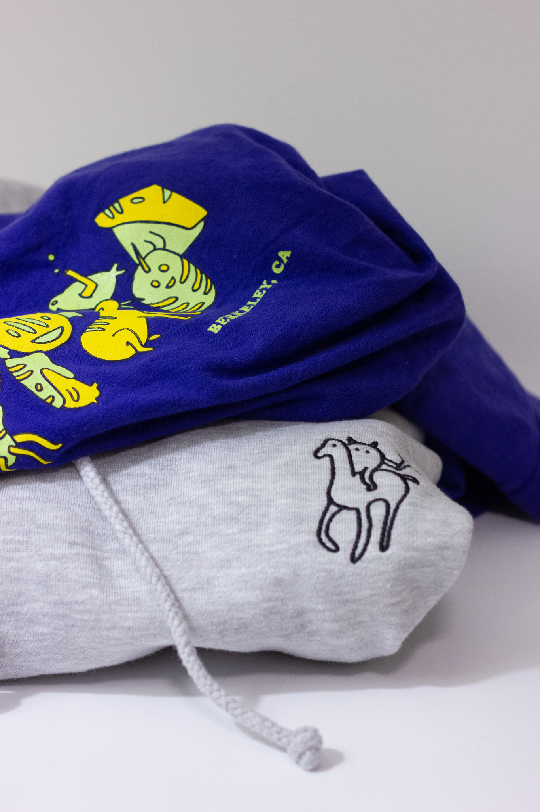
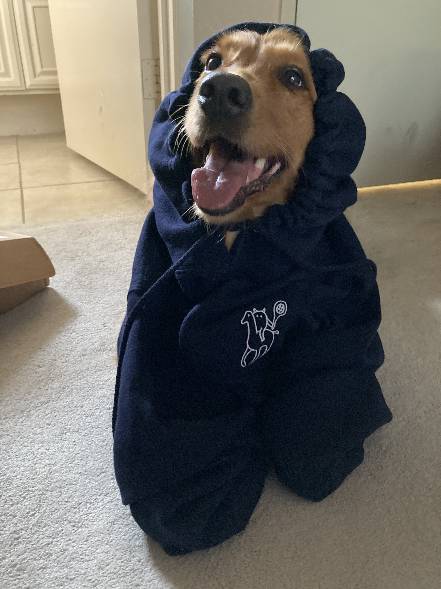
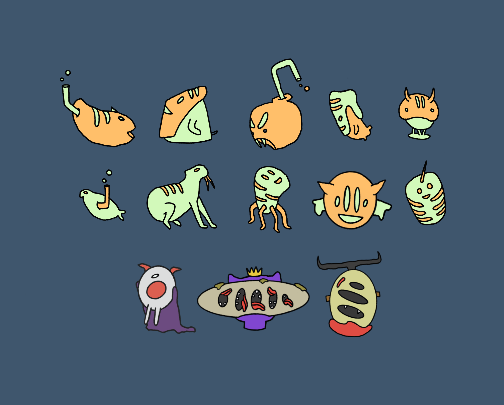
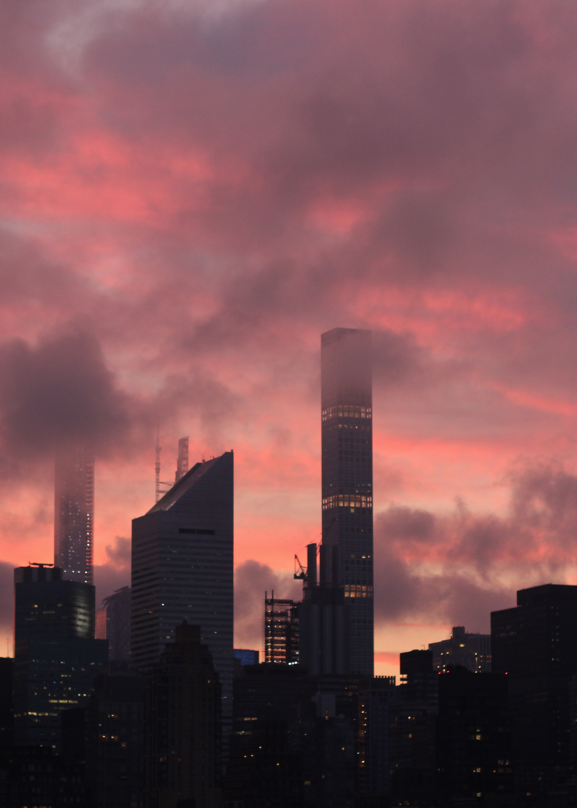
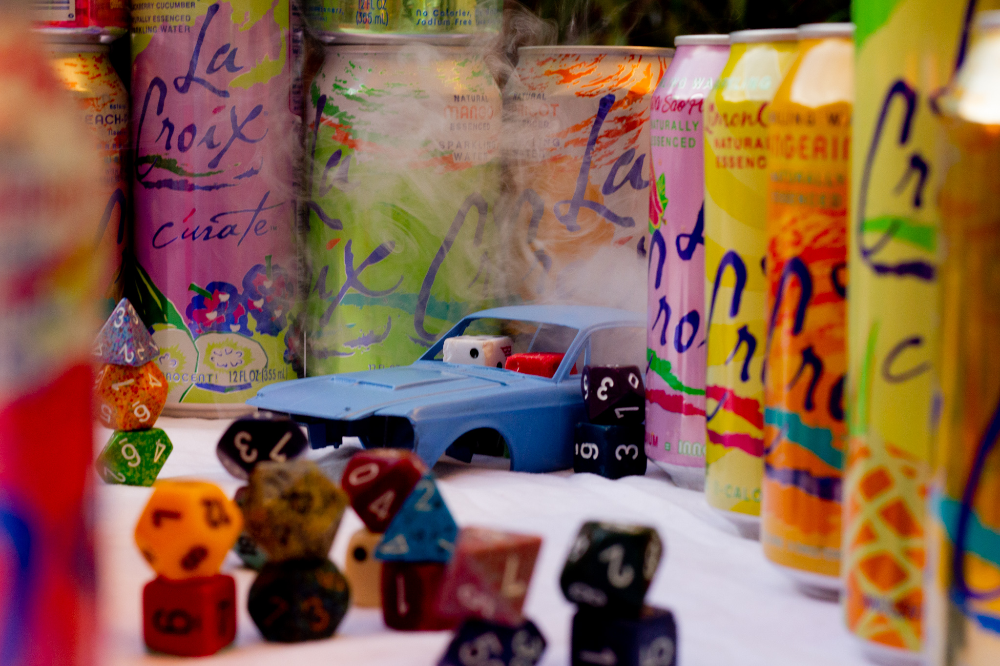
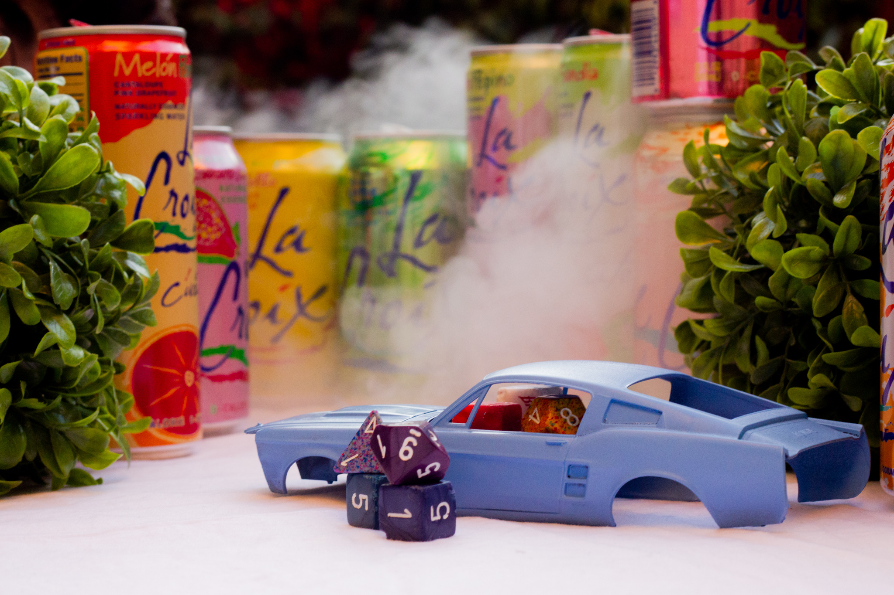
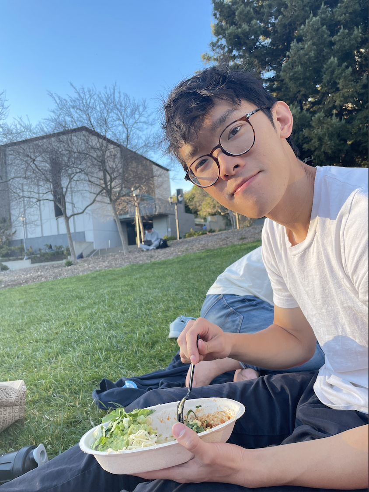

<












>
Arduino, Processing, and OpenCV
Big Sur, California
Watercolor
Hearst Castle
Maya and Adobe Dimension
Grand Teton and Red Rock
Antelope Canyon
Sedona, Arizona
Acrylic
Illustrator and Procreate
Grand Canyon
NYC
Old La Croix cans
The Cannonball Adderley Quintet. P3D/Processing


Hey!
This site has some of my art, photography, and writing. I work as a software engineer, and in my free time I run Club Obre. I graduated (recently) from UC Berkeley with a degree in Computer Science and Philosophy.
I'm a born-and-raised New Yorker, amateur puzzler, and a big fan of tennis, Hot Pockets, and naps.
Writing:
Free Will and MachinesFrequentism and the Best Systems Account
Memory Loss in Epistemic Logic using Multi-agent Systems
Ambiguity in Gricean Implicature
Clustering Nature at Its Joints: Natural Kind Realism in the Context of Unsupervised ML Algorithms (Undergraduate Honors Thesis)
kevinli35 (at) berkeley.edu